Convolutional Neural Networks (CNN)
Foundations, Architectural Evolution, and Implementation

Overview
An Overview of the Four Core Sections
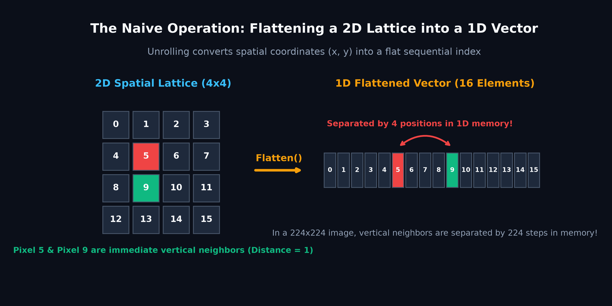
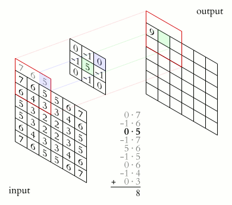
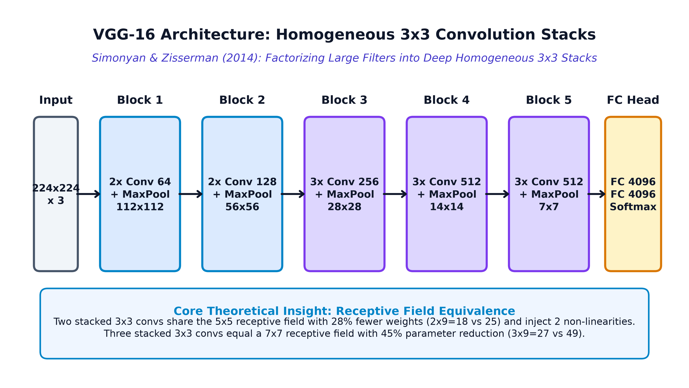
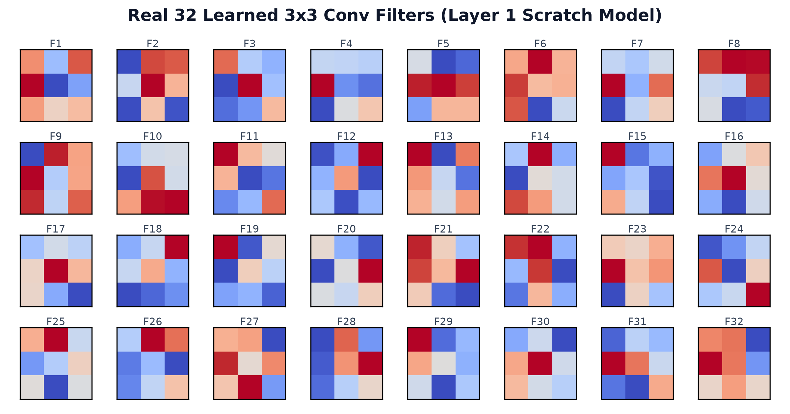
2D Structure vs. Vector Unrolling
Limitations of MLPs on Image Data
-
Spatial Adjacency Destruction: Flattening a 2D image into a 1D vector breaks pixel adjacency.
-
Loss of Translation Equivariance: MLPs must relearn weights for every position if an object shifts.
-
Coordinate Independence: Convolutions keep the 2D grid, applying the same kernel everywhere.
Networks as Function Composition
Layer-wise Non-Linear Transformations
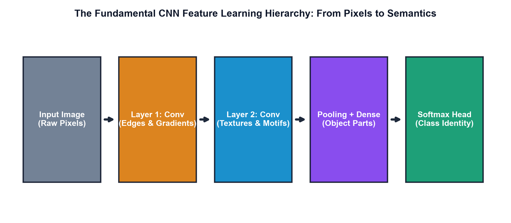
-
Composite Mapping: A network is a composite function F(X;Θ) = f_L ∘ ... ∘ f_1(X).
-
Layer Transformation: Each layer applies an affine map plus non-linearity: f_l(h) = σ(W_l h + b_l).
-
Separable Latent Space: Layers gradually reshape pixels into a linearly separable space.
Why Non-Linearity Is Mandatory
Stacked Linear Layers Yield No Additional Capacity
-
The Linear Collapse Theorem: With linear activations, F(X) collapses to one effective linear map.
-
Zero Depth Advantage: A 100-layer linear network is mathematically just linear regression.
-
Manifold Folding via ReLU: Non-linear activations fold space into piecewise-linear decision regions.
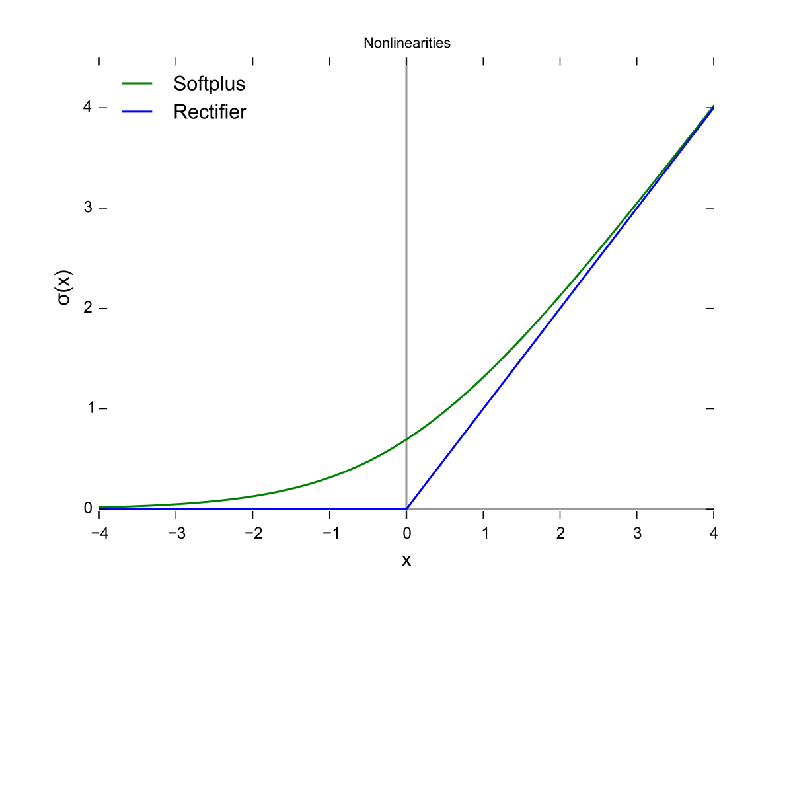
The MLP Parameter Explosion
Scalability Limits of Dense Layers on Image Data
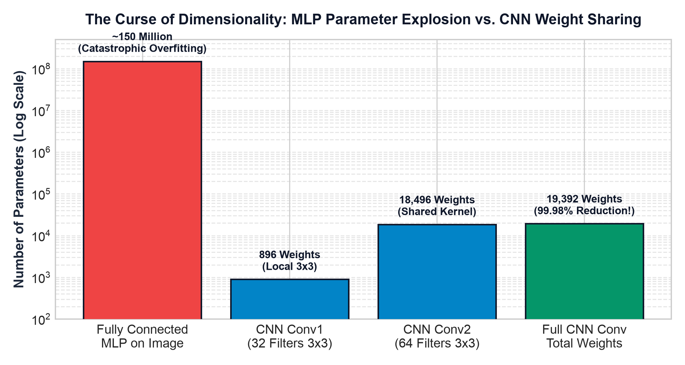
-
Combinatorial Weight Explosion: A 224×224×3 image to 1,024 hidden units needs >154M weights.
-
Overfitting Risk: Huge parameter counts cause overfitting and exhaust GPU memory.
-
Convolutional Efficiency: A 3×3×3 conv filter needs only 28 parameters, at any resolution.
Hubel & Wiesel (1959)
Receptive Fields in the Visual Cortex
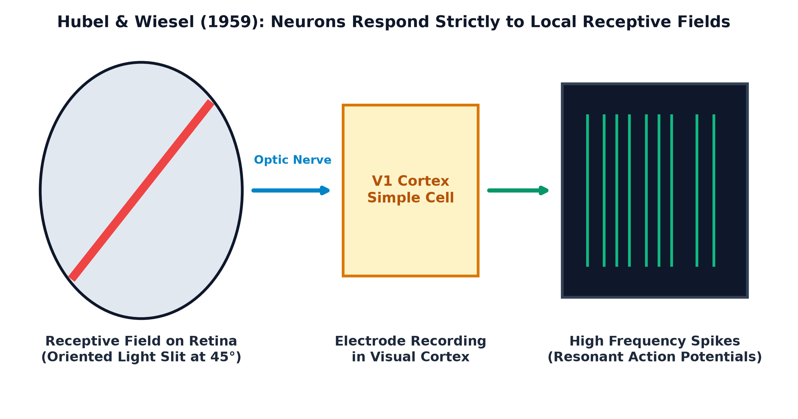
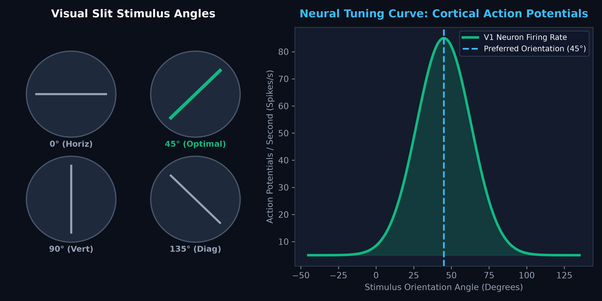
-
Localized Simple Cells: V1 neurons fire for localized oriented edges, not full-field light.
-
Orientation Tuning: Cortical cells respond maximally to specific edge angles (0°, 45°, 90°).
-
Hierarchical Processing: Complex cells pool simple-cell outputs, inspiring CNN kernel hierarchies.
2D Convolution Mechanics
Sliding a Kernel Across the Image
-
Mathematical Formulation: Cross-correlation: S(i,j) = ΣΣ I(i+m,j+n)K(m,n) + b.
-
Kernel Dot Product: A K×K kernel slides across the input, computing a dot product per step.
-
Feature Extraction: Filters act as feature detectors, activating on matching patterns.
Two Core CNN Axioms
Inductive Biases That Cut Parameters
-
Axiom 1: Local Connectivity: Each neuron connects only to a local K×K patch, not the full image.
-
Axiom 2: Weight Sharing: The same filter weights are reused everywhere, giving translation equivariance.
-
Statistical Efficiency: The network learns a small set of shared feature detectors, not millions of weights.
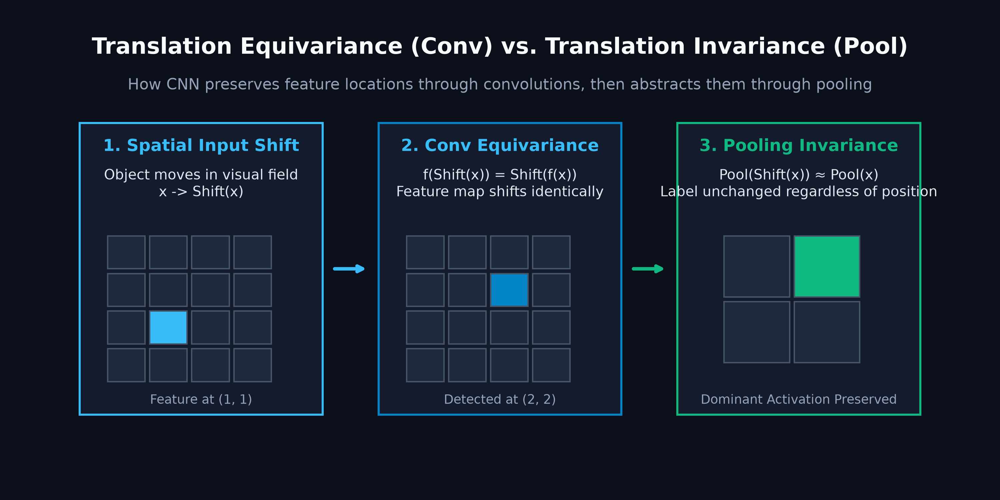
Stride & Padding
Controlling Output Size
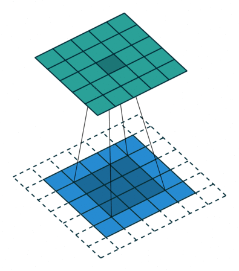
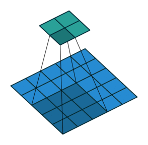
-
Output Dimension Equation: Output size: H_out = ⌊(H_in − K + 2P) / S⌋ + 1.
-
Padding Modes: Valid padding (P=0) shrinks output; same padding keeps size unchanged.
-
Stride Subsampling: Stride > 1 skips pixels, shrinking output and growing the receptive field.
Receptive Field Growth
Expanding Coverage by Stacking Small Filters
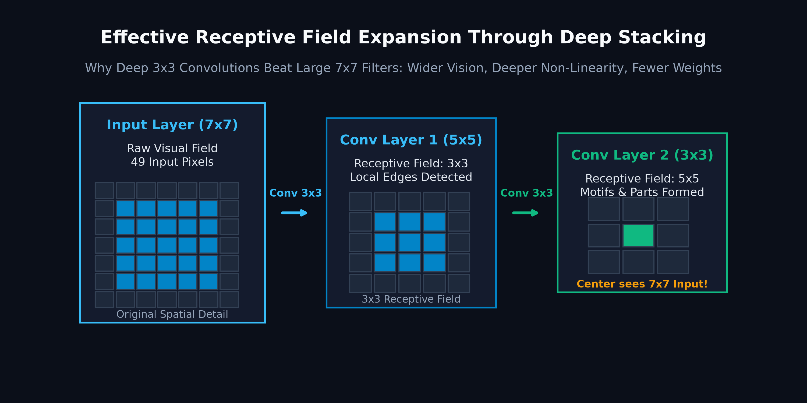
-
Recursive RF Formula: Receptive field grows recursively: RF_l = RF_{l-1} + (K_l−1)·Π S_i.
-
The VGG Insight: Two stacked 3×3 convs match a 5×5 receptive field with 28% fewer params.
-
Hierarchical Context: Deep layers capture global context without needing huge kernels.
3D Tensor Convolutions
Convolving Across Channels and Space

-
Tensor Volume Shape: Input (C_in×H×W) is processed by C_out filters, each shaped C_in×K_h×K_w.
-
Channel-Wise Summation: Each filter convolves all input channels, summing into one output map.
-
Channel Expansion: Stacking C_out responses gives the output volume (C_out×H_out×W_out).
Counting Convolution Parameters
A Formula Independent of Image Size
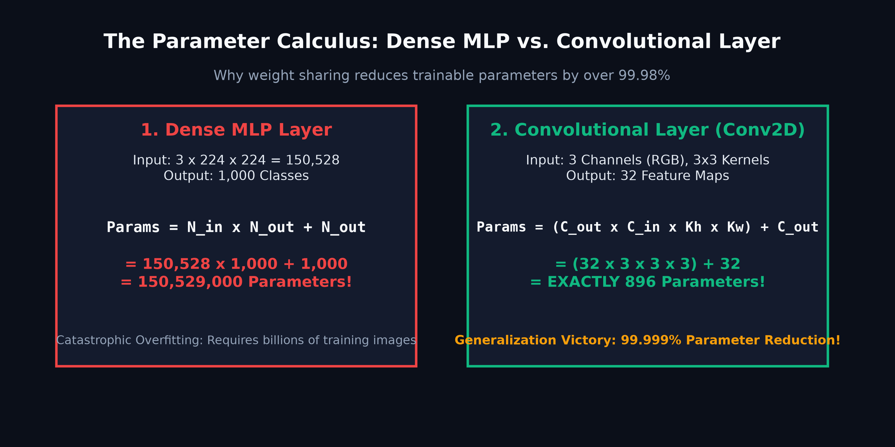
-
Universal Parameter Equation: Params = (K_h·K_w·C_in + 1) · C_out, including one bias per filter.
-
Resolution Independence: Parameter count depends only on kernel size and channels, not image size.
-
Concrete Example: Example: K=3, C_in=64, C_out=128 gives 73,856 parameters.
ReLU and Sparsity
How ReLU Preserves Gradient Flow
-
The ReLU Definition: f(x) = max(0, x), with derivative 1 for x>0 and 0 for x<0.
-
Vanishing Gradient Cure: Unlike Sigmoid/Tanh, ReLU keeps a constant gradient, enabling 100+ layer training.
-
Induced Sparsity: Zeroing negative values creates sparse activations (~50% active neurons).

Max Pooling
Downsampling and Translation Invariance

-
Max Pooling Operation: A 2×2 window with stride 2 keeps the max value, dropping 75% of pixels.
-
Translation Invariance: Small shifts in the input rarely change the pooled max, aiding robustness.
-
Zero Learnable Parameters: Pooling has zero learnable parameters, cutting memory and compute.
Hierarchical Feature Representation
From Edges to Semantic Concepts

-
Shallow Layers (V1): Early filters learn oriented edges, color contrasts, and boundaries.
-
Intermediate Layers: Mid layers combine edges into textures, corners, and contours.
-
Deep Layers: Deep layers detect whole-object parts, like wheels, eyes, and faces.
Neocognitron (1980)
A Biologically Inspired Precursor to CNNs
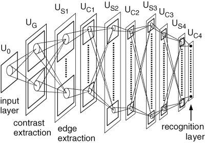
-
S-Cells & C-Cells: S-cells extract oriented features; C-cells pool them for shift tolerance.
-
Self-Organizing Architecture: Introduced layered visual processing and the conv-pool pattern, pre-backprop.
-
Translation Invariance: First neural model to recognize shifted or deformed patterns via receptive fields.
LeNet-5 (1998)
Gradient-Based Digit Recognition
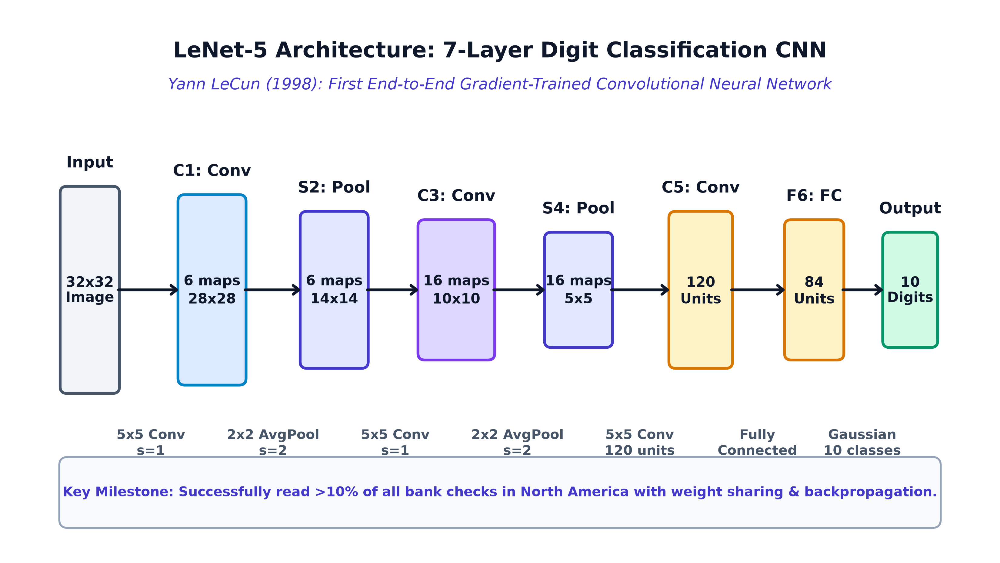
-
End-to-End Gradient Optimization: Trained feature extraction and classification jointly via backpropagation.
-
Shift and Distortion Robustness: Replaced hand-crafted features with shared convolutional filters.
-
Commercial Validation: Deployed by US banks, reading over 10% of checks in the late 1990s.
AlexNet (2012)
The ImageNet Milestone
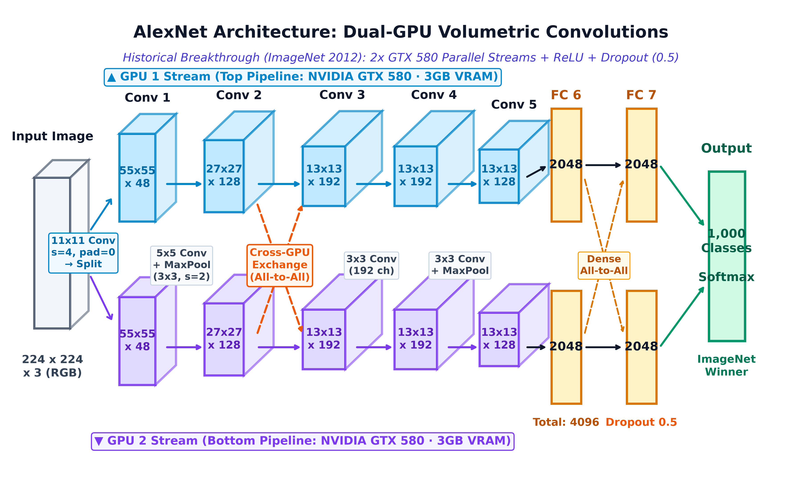
-
Historical Breakthrough: Won ImageNet 2012 with 16.4% top-5 error vs. 26.2% for runner-up.
-
Modern Technical Suite: Combined ReLU, Dropout (0.5), and data augmentation to curb overfitting.
-
GPU Parallel Acceleration: Trained across two GTX 580 GPUs, enabling large-scale representation learning.
VGGNet (2014)
Standardizing 3×3 Convolution Stacks
-
Filter Factorization: Two stacked 3×3 convs match a 5×5 receptive field, saving 28% params.
-
Homogeneous Modular Design: Used uniform blocks: Conv(3×3) → BatchNorm → ReLU → MaxPool(2×2).
-
Deep Backbone Standard: VGG-16/19 became the standard backbone for transfer learning.
GoogLeNet / Inception (2014)
Multi-Scale Features, 1×1 Bottlenecks
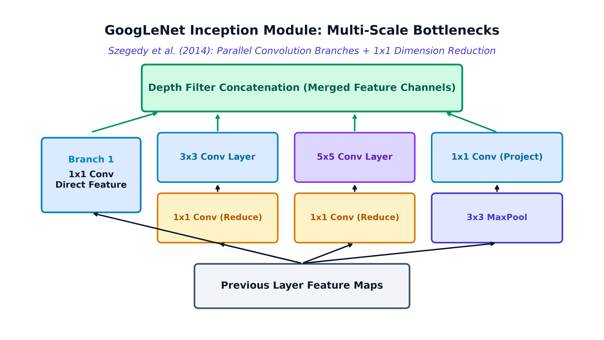
-
Multi-Scale Inception Modules: Processes inputs at 1×1, 3×3, and 5×5 scales in parallel, then concatenates.
-
1x1 Bottleneck Convolutions: 1×1 convolutions reduce channels before costly 3×3/5×5 filters.
-
Global Average Pooling: Global Average Pooling cut parameters from 138M (VGG) to 5M.
ResNet (2015)
Residual Learning With Skip Connections
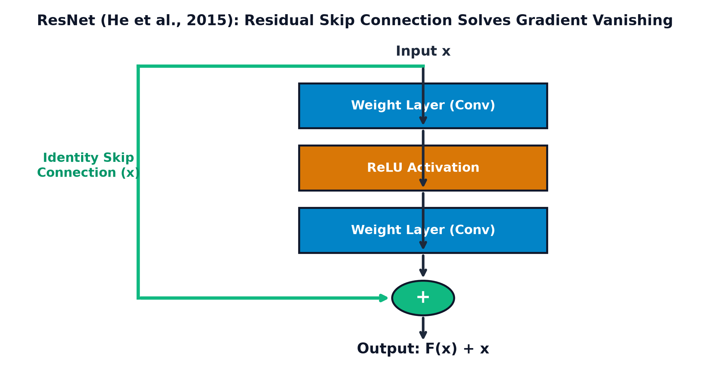
-
The Degradation Problem: Past ~20 layers, plain networks lose accuracy from vanishing gradients.
-
Identity Skip Highway: Residual form H(x) = F(x) + x lets gradients flow directly to early layers.
-
Superhuman Accuracy: Scaled to 152 layers, winning ImageNet 2015 with 3.57% top-5 error.
DenseNet (2017)
Dense Connectivity via Concatenation
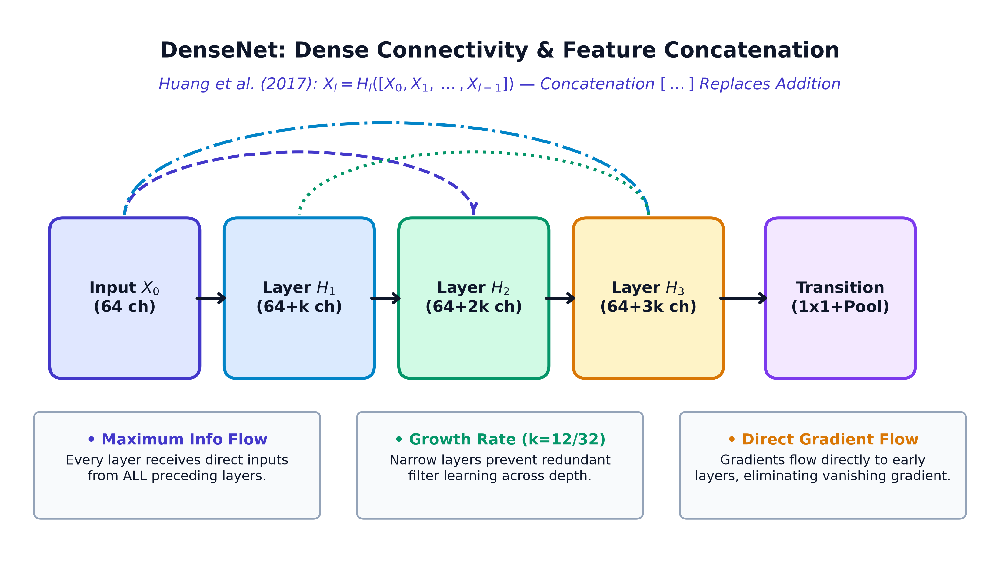
-
Full Feed-Forward Connectivity: Each layer connects to all later layers via feature-map concatenation.
-
Compact Growth Rate (k): Each layer adds only k new channels (k=12–32), keeping params low.
-
Direct Gradient Flow: Early layers get gradients directly from the loss, avoiding vanishing gradients.
U-Net (2015)
Encoder-Decoder for Segmentation
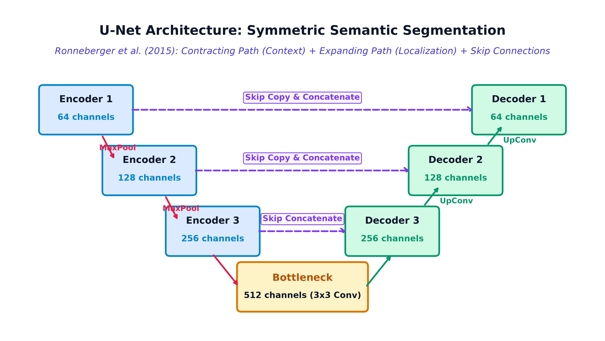
-
Dense Prediction Paradigm: Shifts from image classification to pixel-level segmentation masks.
-
Contracting & Expanding Paths: Encoder contracts for context; decoder upsamples to restore resolution.
-
Direct Skip Copy Channels: Skip connections copy encoder features to the decoder, preserving edges.
MobileNet (2017)
Depthwise Separable Convolutions
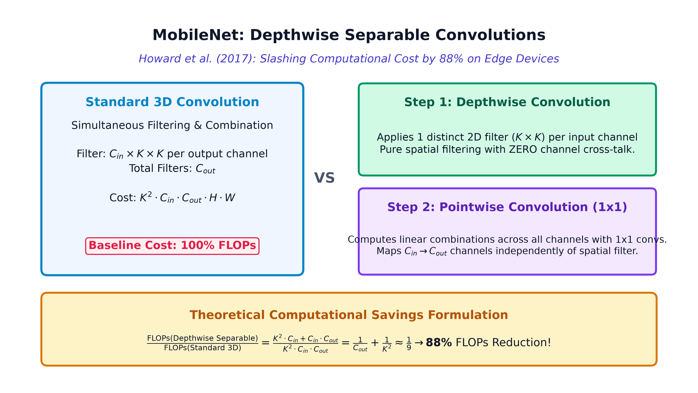
-
Depthwise Factorization: Splits convolution into depthwise (spatial) and pointwise (1×1) steps.
-
Massive Computational Savings: Cuts FLOPs roughly 8–9x versus standard convolutions, ~1% accuracy loss.
-
Real-Time Mobile Vision: Enabled real-time vision on phones, embedded robotics, and edge devices.
EfficientNet (2019)
Compound Scaling of Depth, Width, Resolution
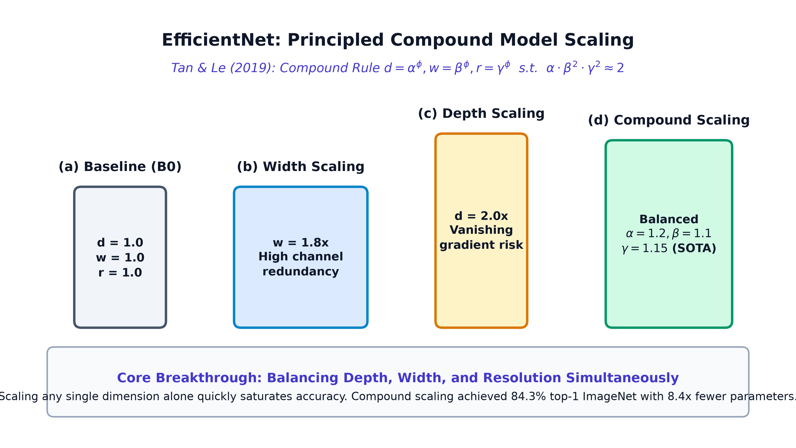
-
Compound Scaling Principle: Balances depth, width, and resolution via α·β²·γ² ≈ 2.
-
Balanced Scaling Wins: Scaling only one dimension saturates; balanced scaling wins on accuracy.
-
State-of-the-Art Efficiency: EfficientNet-B7 hit 84.3% top-1 accuracy, 8.4x smaller and 6.1x faster.
SENet (2018)
Dynamic Channel Attention (Y = X ⊙ s)
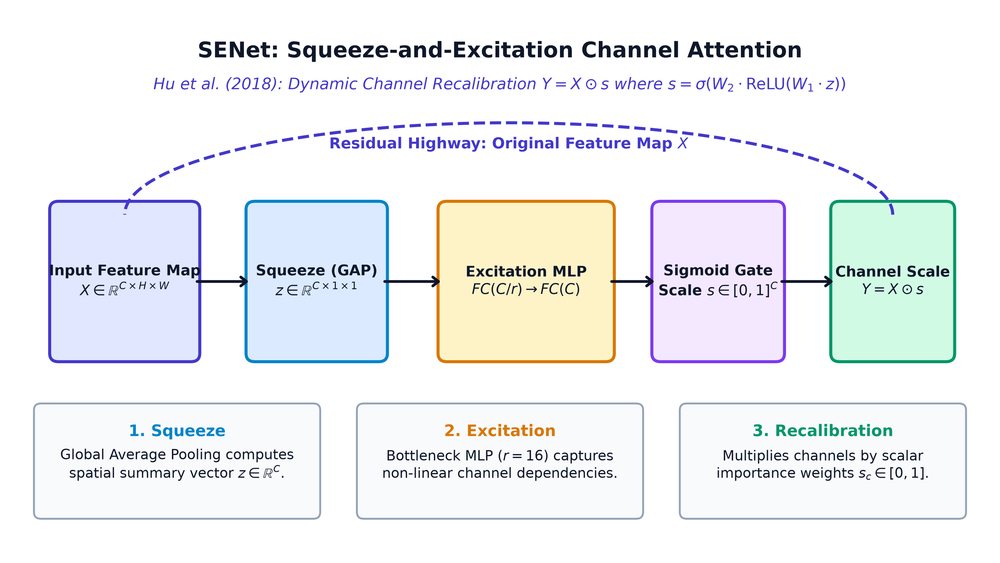
-
Squeeze Operation: Global Average Pooling compresses each channel into one descriptor.
-
Excitation Gating: A small MLP (FC→ReLU→FC→Sigmoid) learns channel importance, r=16.
-
Dynamic Recalibration: Reweights each channel by a learned score, boosting useful features.
CBAM (2018)
Sequential Channel and Spatial Attention
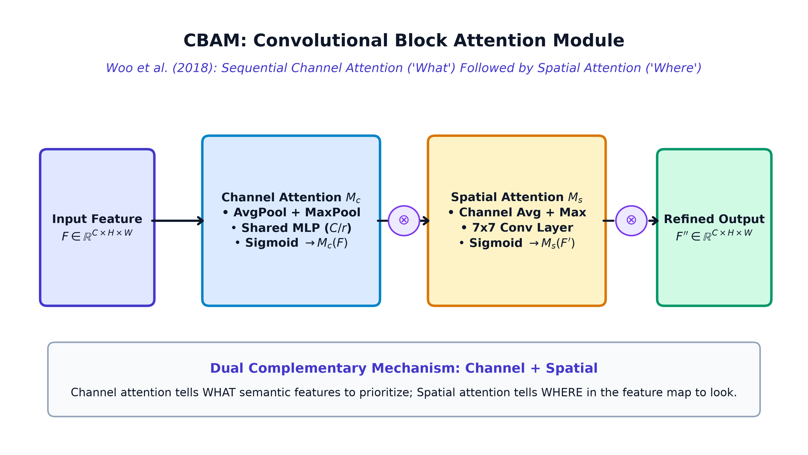
-
Sequential Dual Attention: Channel attention (what matters) followed by spatial attention (where).
-
Dual Pooling Aggregation: Combines average-pooling and max-pooling to generate attention maps.
-
Plug-and-Play Integration: A lightweight module that drops into ResNet or MobileNet with minimal overhead.
Vision Transformer (2020)
Representing Images as Patch Sequences Without Convolutions
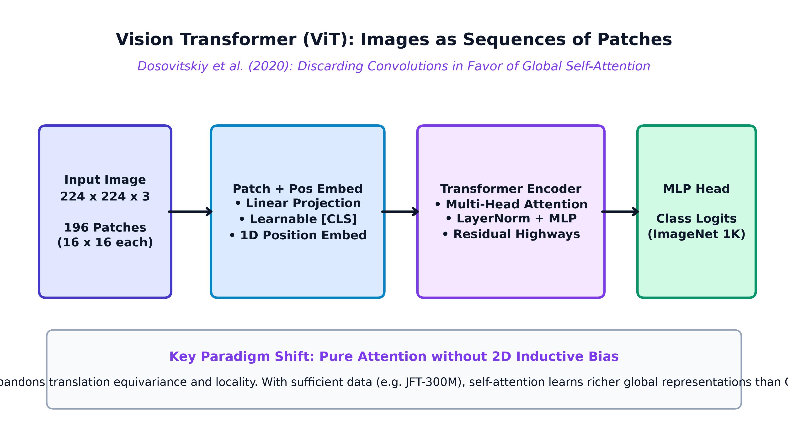
-
Patch Tokenization: Splits a 224×224×3 image into 196 patches, each embedded as a token.
-
Pure Self-Attention: Tokens interact via self-attention: softmax(QK^T/√d_k)V, capturing global context.
-
Massive Scale Dominance: Drops spatial priors, outperforming CNNs when pretrained on huge datasets.
CNN vs. Vision Transformer
A Comparison of Inductive Priors, Cost, and Trends
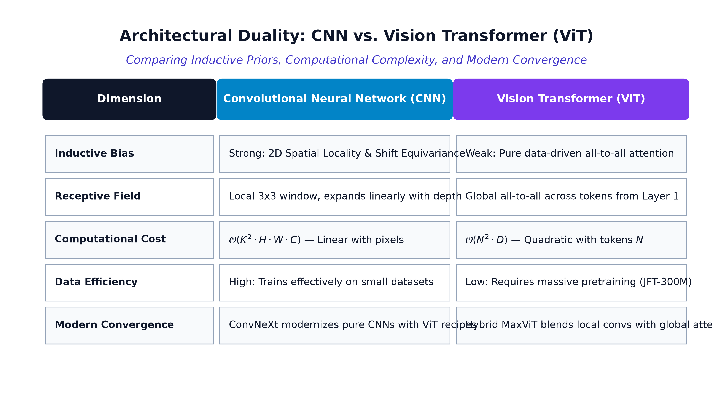
-
Inductive Bias Dichotomy: CNNs bake in spatial priors; ViTs learn relationships purely from data.
-
Computational Asymmetry: Convolutions scale linearly O(K²HW); self-attention scales quadratically O(N²).
-
Modern Convergence: ConvNeXt modernizes CNNs with ViT ideas; MaxViT blends convs and attention.
The CNN Pipeline
From Pixels to Class Logits
-
Feature Extraction Backbone: Alternating conv, ReLU, and pooling blocks extract robust features.
-
Transition to Classification: Pooling or flattening compresses feature maps into a 1D vector.
-
Decision Head: Fully-connected layers plus Softmax produce class probabilities.
Tensor Shape Across Depth
Spatial Shrinkage, Channel Growth
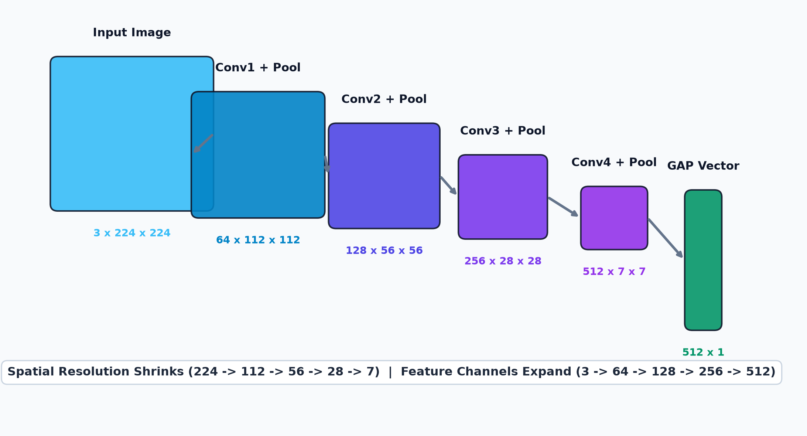
-
Spatial Resolution Contraction: Spatial size shrinks: 224 → 112 → 56 → 28 → 7 via pooling/stride.
-
Channel Capacity Growth: Channels grow inversely: 3 → 64 → 128 → 256 → 512.
-
The Tradeoff: Pixel-level redundancy is traded for abstract, invariant features.
FLOPs vs. Parameters
Where Compute and Memory Go
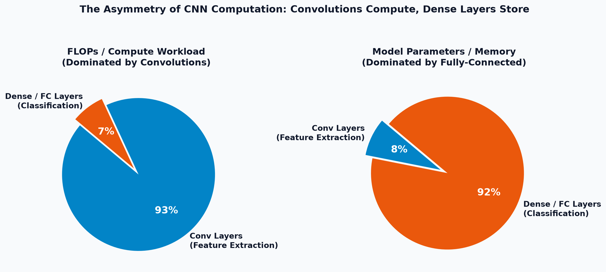
-
Compute Bottleneck (FLOPs): Convolutions account for over 90% of total FLOPs.
-
Memory Bottleneck (Parameters): Fully-connected layers account for over 90% of model weights.
-
The Fix: Global Pooling: Global Average Pooling replaces dense layers, cutting millions of params.
Three Levels of Implementation
From Raw Math to High-Level Frameworks
-
Vectorized im2col: Flattens sliding windows into a matrix for GEMM
-
Manual Backprop: col2im redistributes gradients by hand
-
Educational Value: Full visibility into tensor mechanics
-
Declarative Graph: High-level layers: Conv2D, MaxPooling2D
-
Automated Graph: Forward/backward graph compiled automatically
-
Rapid Prototyping: Fast workflow for model experimentation
-
Dynamic Autograd: Forward pass runs eagerly, with automatic differentiation
-
Pythonic Debugging: Direct tensor inspection and custom hooks
-
Production Standard: The dominant framework in deep learning research
Cross-Framework Rosetta Stone
NumPy, Keras, and PyTorch Side by Side
| Primitive Concept | NumPy (From Scratch) | Keras (Declarative Graph) | PyTorch (Imperative Autograd) |
|---|---|---|---|
| 2D Convolution | Y_col = np.dot(W_row, X_col) | layers.Conv2D(32, (3, 3), padding='same') | nn.Conv2d(in_ch, out_ch, kernel_size=3) |
| Non-Linearity | a = np.maximum(0, z) # ReLU | layers.Activation('relu') / layers.ReLU() | torch.relu(z) / nn.ReLU() |
| Spatial Pooling | max_pool2d_scratch( X, pool_size=2) | layers.MaxPooling2D( pool_size=(2, 2)) | nn.MaxPool2d(kernel_size=2, stride=2) |
| Batch Normalization | gamma * (x - mu) / np.sqrt(var + eps) + beta | layers.BatchNormalization() | nn.BatchNorm2d( num_features) |
| Backward Pass | dX_col = np.dot( W_row.T, dY_col) | tape.gradient( loss, model.trainable_vars) | loss.backward() # C++ Autograd DAG |
| Weight Update | W -= learning_rate * dW | optimizer.apply_gradients( zip(grads, vars)) | optimizer.step() |
Forward Pass: im2col + GEMM
Turning Convolution Into Matrix Multiplication
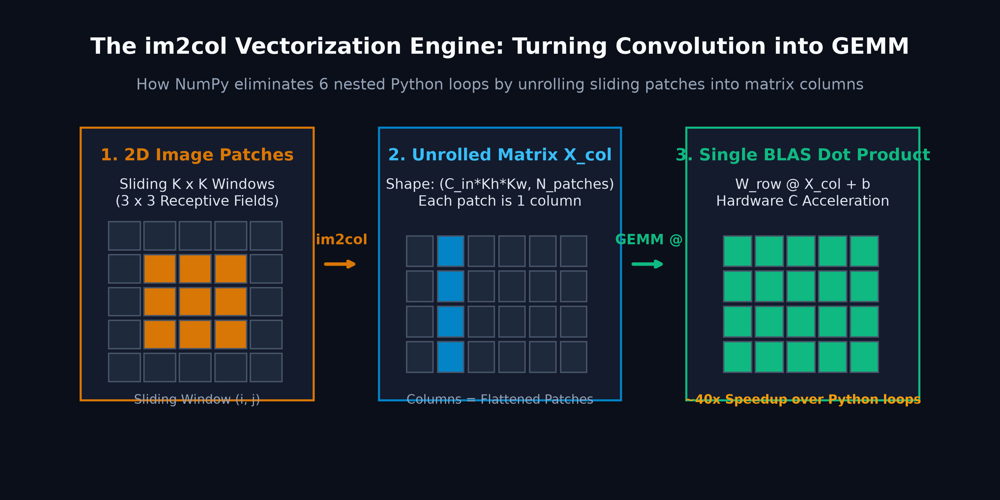
Backward Pass: col2im
Accumulating Gradients Over Overlapping Patches
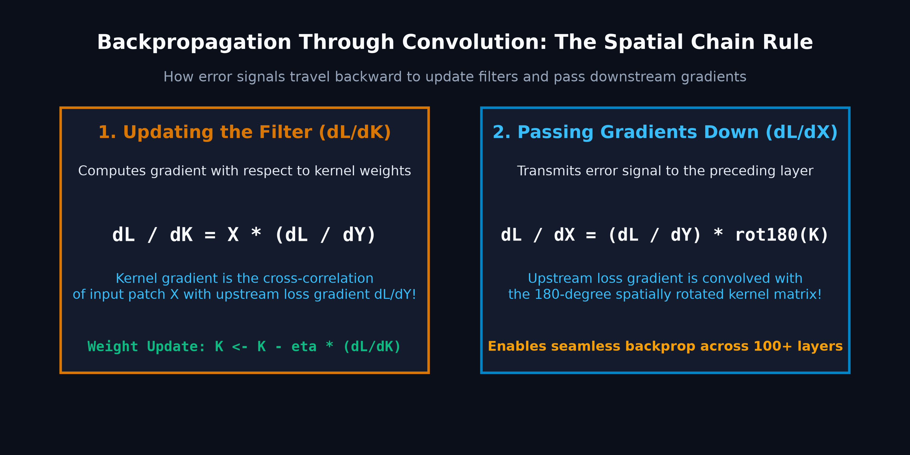
PyTorch Implementation (nn.Module)
A Compact Object-Oriented CNN
-
Dynamic Computation Graph: Graphs build on-the-fly during forward execution, easing debugging.
-
Production BatchNorm: Tracks batch statistics in training, uses fixed stats at inference.
-
Automatic Differentiation: Autograd traces tensor operations to build the backward pass automatically.
Verification & Inference Dashboard
Learned Filters to Live Predictions
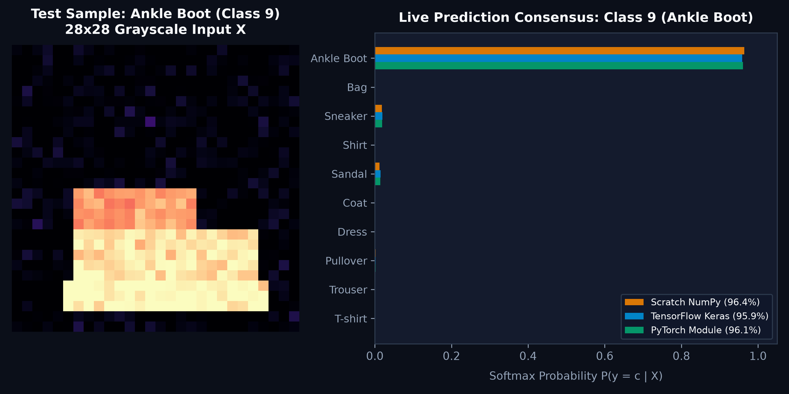
-
Learned Filter Convergence: Trained 3×3 kernels converge to edge and texture detectors unsupervised.
-
Real-Time Prediction Consensus: A live forward pass reaches >96% confidence, matching across all 3 frameworks.
-
Foundational Inductive Bias: Locality and weight sharing remain the foundation of modern vision models.
From Theory to Practice
Three Applications: Tabular MLP, Grayscale CNN, RGB CNN
-
Task: Tabular binary classification
-
Input: 50 normalized features
-
Model: MLP, 2,177 parameters
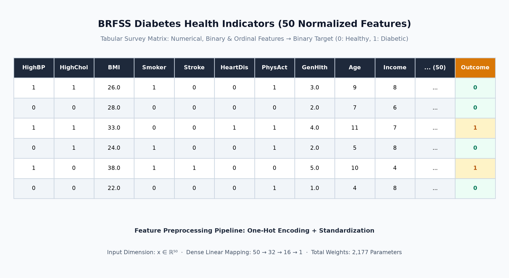
-
Task: Grayscale image classification
-
Input: 1×28×28, 10 classes
-
Model: 2-block CNN, 421,642 parameters
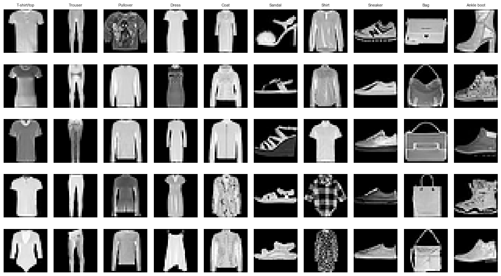
-
Task: RGB image classification
-
Input: 3×32×32, 10 classes
-
Model: 2-block CNN, 545,098 parameters
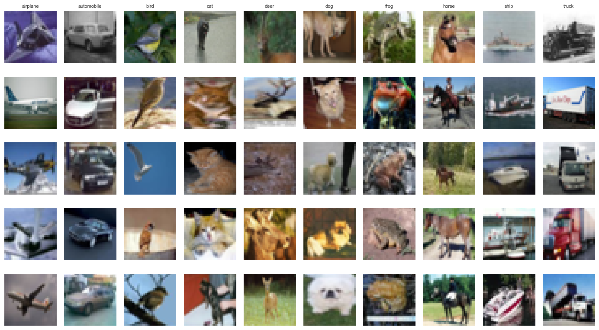
Fashion-MNIST: Grayscale CNN in Practice
Tracing Tensor Shapes Through a Single-Channel CNN
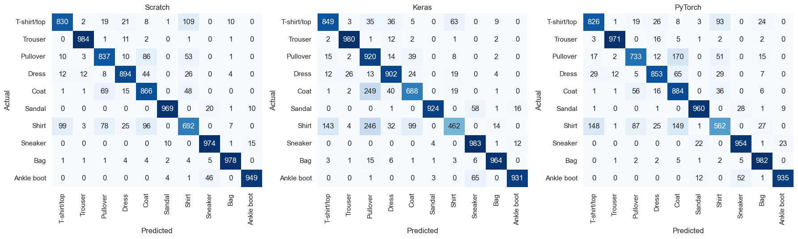
-
Input Tensor: (B, 1, 28, 28): single grayscale channel, 28×28 pixels.
-
Conv + Pool Blocks: Conv(1→32) → Pool → (B,32,14,14); Conv(32→64) → Pool → (B,64,7,7).
-
Classifier Head: Flatten to 3,136 → Linear(3136→128) → Linear(128→10).
CIFAR-10: RGB CNN in Practice
Tracing Tensor Shapes Through a 3-Channel CNN
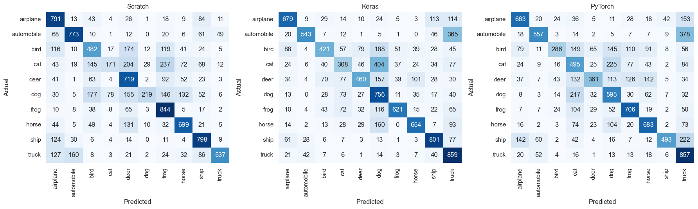
-
Input Tensor: (B, 3, 32, 32): 3 color channels, 32×32 pixels.
-
Conv + Pool Blocks: Conv(3→32) → Pool → (B,32,16,16); Conv(32→64) → Pool → (B,64,8,8).
-
Classifier Head: Flatten to 4,096 → Linear(4096→128) → Linear(128→10).
Same Math, Three Frameworks
Scratch (NumPy), Keras, and PyTorch on the Same 3 Datasets
| Component | Scratch (NumPy) | Keras | PyTorch |
|---|---|---|---|
| Preprocessing | / 255.0, transpose to CHW | / 255.0, HWC (native) | / 255.0, transpose to CHW |
| Convolution Layer | conv2d_forward (im2col) | layers.Conv2D() | nn.Conv2d() |
| Backpropagation | Manual chain rule functions | Autodiff in fit() | loss.backward() (Autograd) |
| Parameter Updates | W -= lr * dW | optimizer='sgd' | torch.optim.SGD() |
Empirical Results Across Frameworks
Comparable Accuracy, Divergent Training Time
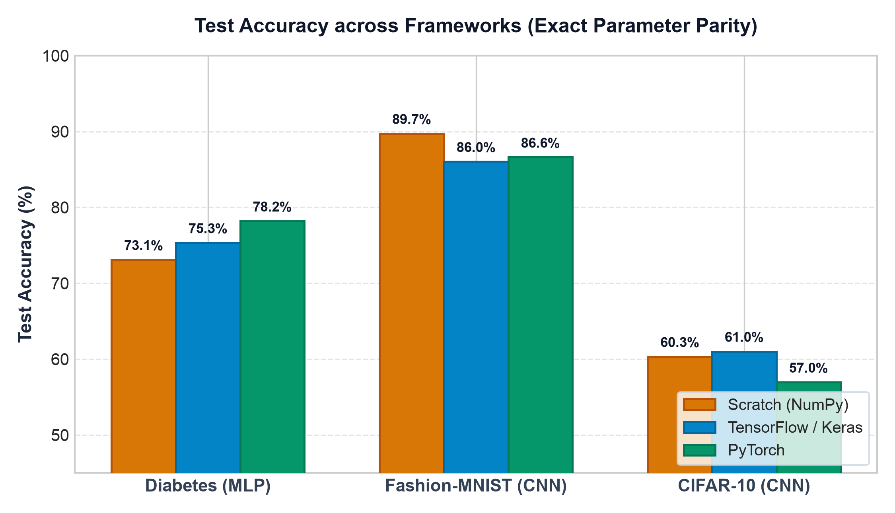
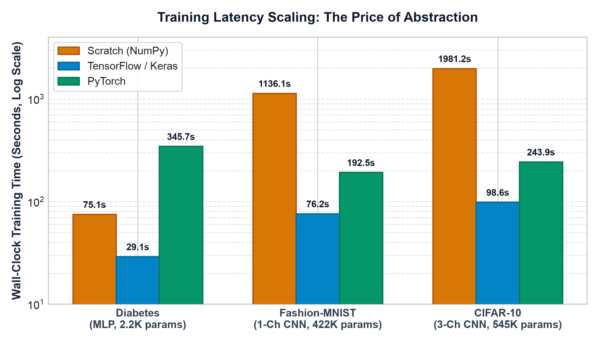
-
Accuracy Parity: Diabetes 73-78%, Fashion-MNIST 86-90%, CIFAR-10 57-61% across all 3 frameworks.
-
Identical Parameter Counts: 2,177 / 421,642 / 545,098 params match exactly across Scratch, Keras, PyTorch.
-
Training Time Gap: Scratch is 15-20x slower than Keras/PyTorch on CNN workloads (pure NumPy im2col).
Closing Synthesis
Empirical Confirmation of CNN Theory Across Three Assignments
-
100% Math Parity: Same topology and split, near-identical accuracy across frameworks.
-
Empirical Proof: Diabetes 73-78%, Fashion-MNIST 86-90%, CIFAR-10 57-61%.
-
Universal Math: Tensor calculus and gradients stay invariant to framework syntax.
-
15x-20x Speedup: Compiled C++/CUDA BLAS beats pure NumPy on CNN workloads.
-
FLOPs Dominance: Convolutions consume over 90% of total compute.
-
Engineering Role: NumPy teaches the math; compiled engines run production.
-
NumPy (From Scratch): Full visibility into im2col unfolding and col2im backprop.
-
Keras (High-Level): Fastest to build, declarative graph, rapid prototyping.
-
PyTorch (Imperative): Dynamic autograd, easy debugging, modular flexibility.